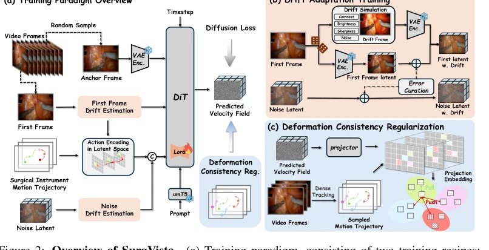
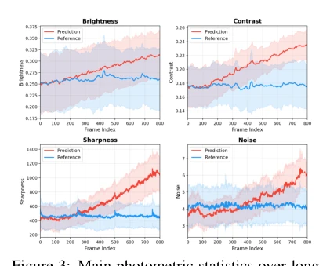
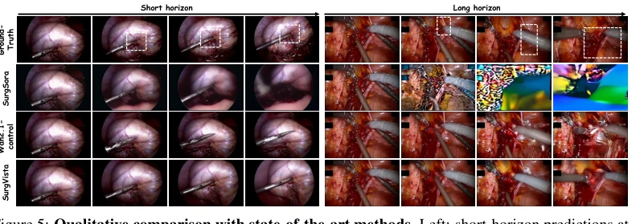

Figure 1: Surgical world modeling. (a) Simulating scene evolution for safe policy learning. (b) Predicting future frames from an initial frame and instrument actions. Two key challenges: (c) Tissue fails to deform under instrument contact. (d) Visual quality degrades over long-horizon rollouts.
方法Method
SurgVista 基于预训练 latent video DiT [33]，采用 Flow Matching 框架。整体流程分为动作编码、去噪生成及两项正则化训练。首先，Latent Action Encoding 将器械关键点轨迹映射到潜在空间，通过复制首帧特征生成动作潜码，无需辅助模块 [10]。核心创新在于两项训练策略：Deformation Consistency Regularization (DCR) 利用点追踪器 [23] 提取密集场景点轨迹，在潜在空间通过 InfoNCE 损失强制同一轨迹点在不同帧的特征一致性，解决器械接触组织时的形变不一致问题。Drift Adaptation Training (DAT) 针对自回归推理时的分布偏移，通过两种代理模拟漂移：一是在线预测残差（模型内在），将当前模型预测误差注入条件帧；二是光度增强（模型无关），模拟长时程生成的曝光、对比度退化。两者结合，使模型在训练时即适应推理时的条件退化，显著提升长序列稳定性。
—

Figure 2: Overview of SurgVista. (a) Training paradigm, consisting of two training recipes: Deformation Consistency Regularization (DCR) and Drift Adaptation Training (DAT). (b) DAT simulates inference-time conditioning drift via two complementary proxies. (c) DCR enforces cross- frame motion cohere

Figure 3: Main photometric statistics over long- horizon predictions.
Figure 4: Overview of SurgWorld-Bench. (a) Task setup with three procedure types and two evaluation horizons. (b) Evaluation suite with decoupled instrument and tissue trajectory metrics. (c) Data curation pipeline for extracting region-specific motion trajectories.

Figure 5: Qualitative comparison with state-of-the-art methods. Left: short-horizon predictions at frames 1, 5, 10, and 15. Right: long-horizon predictions at frames 1, 100, 500, and 800.